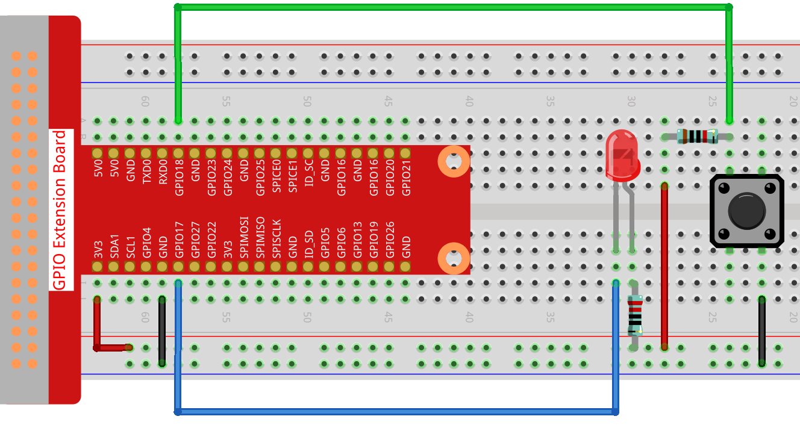

Nota
Ciao, benvenuto nella SunFounder Raspberry Pi & Arduino & ESP32 Enthusiasts Community su Facebook! Approfondisci Raspberry Pi, Arduino ed ESP32 con altri appassionati.
Perché Unirsi?
Supporto Esperto: Risolvi i problemi post-vendita e le sfide tecniche con l’aiuto della nostra comunità e del nostro team.
Impara & Condividi: Scambia consigli e tutorial per migliorare le tue competenze.
Anteprime Esclusive: Accedi in anteprima agli annunci dei nuovi prodotti.
Sconti Speciali: Approfitta di sconti esclusivi sui nostri prodotti più recenti.
Promozioni Festive e Omaggi: Partecipa a omaggi e promozioni speciali per le festività.
üëâ Pronto a esplorare e creare con noi? Clicca su [Qui] e unisciti oggi stesso!
2.1.1 Pulsante
Introduzione
In questo progetto, impareremo come accendere e spegnere un LED utilizzando un pulsante.
Componenti

Schema a Blocchi
Utilizziamo un pulsante normalmente aperto come input per Raspberry Pi, come illustrato nello schema sottostante. Quando si preme il pulsante, GPIO18 passerà a livello basso (0V). Possiamo rilevare lo stato di GPIO18 tramite programmazione; se GPIO18 diventa a livello basso, significa che il pulsante è stato premuto. A questo punto, possiamo eseguire il codice corrispondente per accendere il LED.
Nota
Il pin più lungo del LED è l’anodo, mentre quello più corto è il catodo.


Procedure Sperimentali
Passo 1: Costruisci il circuito.
Passo 2: Vai alla cartella del codice.
cd ~/davinci-kit-for-raspberry-pi/nodejs/
Passo 3: Esegui il codice.
sudo node button.js
Ora, premi il pulsante e il LED si accenderà; rilascia il pulsante e il LED si spegnerà.
Codice
const Gpio = require('pigpio').Gpio;
const led = new Gpio(17, {mode: Gpio.OUTPUT});
const button = new Gpio(18, {
mode: Gpio.INPUT,
pullUpDown: Gpio.PUD_DOWN,
edge: Gpio.EITHER_EDGE
});
button.on('interrupt', (level) => {
led.digitalWrite(level);
});
Spiegazione del Codice
const Gpio = require('pigpio').Gpio;
const led = new Gpio(17, {mode: Gpio.OUTPUT});
Importa il modulo pigpio e crea un oggetto led per controllare la porta GPIO17, impostandola in modalità output.
const button = new Gpio(18, {
mode: Gpio.INPUT,
pullUpDown: Gpio.PUD_DOWN,
edge: Gpio.EITHER_EDGE
});
Crea un oggetto button per controllare la porta GPIO18, impostandola in modalità input e su «pull-down» (basso quando il pulsante non è premuto, alto quando il pulsante è premuto). Imposta la funzione di interrupt in modalità EITHER_EDGE, ovvero sia per il fronte di salita che per quello di discesa.
button.on('interrupt', (level) => {
led.digitalWrite(level);
});
Scrivi una funzione di interrupt: quando il pulsante è premuto, il segnale va a livello basso, attivando la funzione di interrupt, che scrive il livello basso della porta GPIO del pulsante alla porta GPIO del LED, accendendo il LED.
Quando il pulsante viene rilasciato, il segnale va a livello alto, riattivando la funzione di interrupt che spegne il LED.
Immagine del Fenomeno